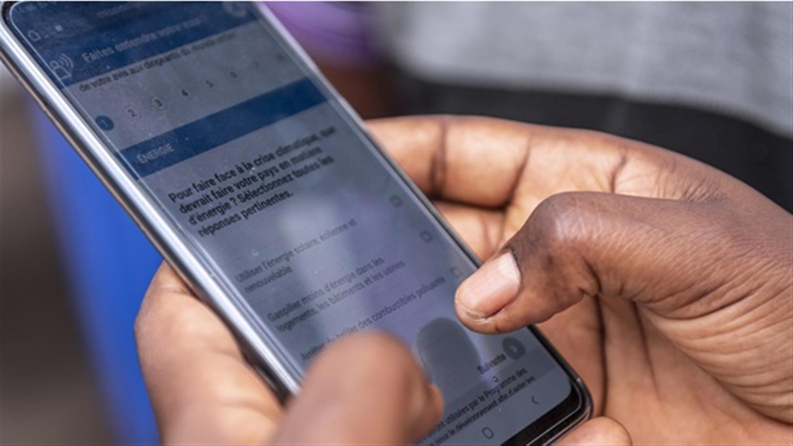
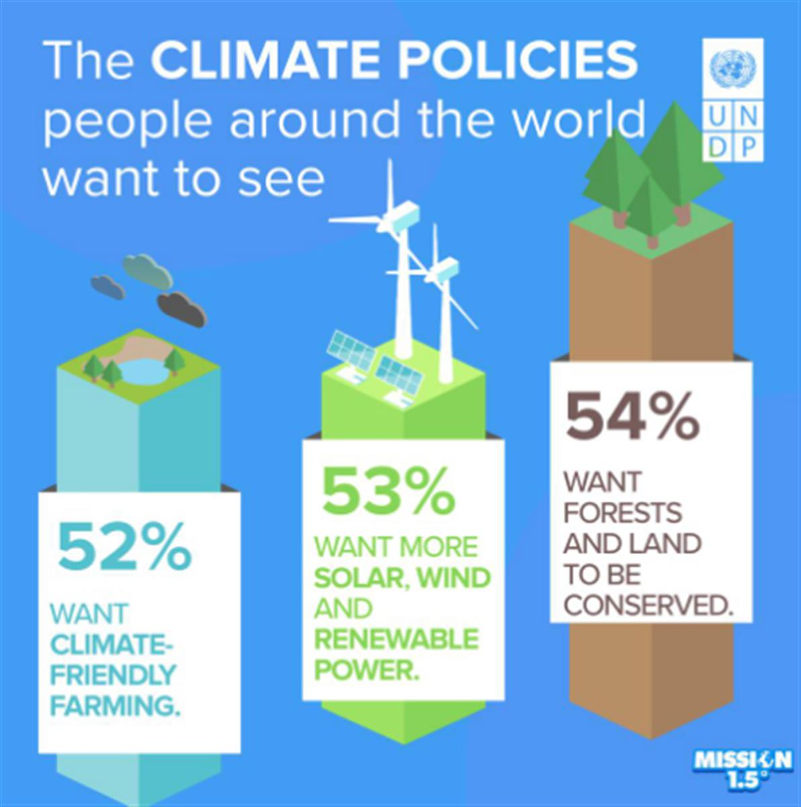

*During COVID-19 confinements across the world, many of us turned to video games to relieve stress, socialize, or simply pass the time. In the United States, for example, more than 55 per cent of residents picked up video games during the first phase of lockdown according to The Verge.
After connecting at the 2020 Web Summit, ITU News recently caught up with Jude Ower, founder and CEO of Playmob: a ‘gaming for good’ platform that works with a variety of partners including the United Nations Environment Programme (UNEP) and United Nations Development Programme (UNDP) to engage audiences, raise awareness and reveal ‘value-driven’ data through gaming.*
The world of mobile gaming and the United Nations may seem like an unlikely combination to some. How and why did you first start working together?
A couple of years ago, I was in New York for the UN General Assembly, and was invited to a lunch with Project Everyone which has been set up by film director Richard Curtis, to make the Global Goals famous. There I met someone from UNDP and had spoken at a few events at the UN as well. Their eyes lit up when we talked about reaching gamers, making an impact, and driving actions.
In 2019, [UNDP] got in touch to do something around climate and gaming. So we started talking about how we work, how our platform works. They really liked our model, which fit with their plans.
What is the Playmob platform and how does it work?
We essentially create playable adverts which we roll out through mobile games. They're like mini games that you play within an existing game.
This way to reach people cuts through the noise using a media platform, but as a game within a game, it feels more natural.
Our playable ads also teach people about global issues, particularly around the Global Goals, and show how they can take action.
What kind of impact did your partnership with the UN create?
UNDP was interested in each country's contribution to climate action, and how they're going to reduce their carbon emissions. But how do you explain this to 7 billion people? And how do you better understand what people really care about when it comes to climate action? [Climate policy] is very top-down-driven.
We did a pilot in the UK in September 2019 and had really high engagement rates. Once we launch something, we look at how we could optimize it, so we created a plan and rolled out to a number of countries, big and small. That gave us more insight in terms of how people played. In some markets, we weren’t familiar with the gaming audience in so much detail. After learning, we started to roll out to more countries, and are in about 50 at the moment.
What did you discover about how gaming audiences and behaviours differ throughout the world?
The mini games are built with HTML5.
The biggest thing is bandwidth. How good is the bandwidth per country?
A big problem was, in some places, the game didn't load because it was big, in terms of file size. There are constraints we have to work within to make sure the file sizes are even smaller, now that we've rolled out the lite version to all countries.

Playing Mission 1.5 in the Democratic Republic of Congo. Image credit: UNDP
Mobile gaming is massively on the rise, especially in developing countries, where people have got access to mobile phones. As smartphone penetration and Internet access and start to build, I think the key lesson for us was to make sure that the games are light enough that they can reach as many people as possible.
There are still stark inequalities in terms of broadband access in different parts of the world. How does Playmob deal with those?
We ended up creating a lite version of the game, with a tiny file size. Once we launched that, it was incredible; the lite version really made a difference. From then on, it was pretty straightforward in terms of optimizing. We also consider things like time zones. Launches had to be done at certain times of the day when we thought people would be playing, which would be on a commute, or lunchtime, or after seven o'clock in the evening.
The Mission 1.5 game is focused on SDG 13: Climate Action by putting players in the role of climate policymakers. Are there plans to create a game for more SDGs?
Definitely, our goal is to try and cover all the SDGs. We'd love to have data set that shows people's attitudes right now and how we're progressing over time.
We believe the biggest way we're going to achieve the SDGs is by aligning people, and showing them what actions they can take as an individual.
This is where AI and machine learning become really interesting, because then we can start to predict if we're on track, gauge awareness levels, and understand if and where we need more interventions.
But we can't cover all the SDGs at once, because we're still quite small. As you know, climate action has been important for us. And we started off doing a project around oceans (SDG 14: Life Below Water). Today we're doing projects for responsible consumption and production (SDG 12), particularly of data, which is really fascinating as well.
Tell ITU News readers more about the tech. Does Playmob use AI?
AI and machine learning are some things that we're working on this year. Some of the areas that we are interested in are where are people coming from, and what games are people playing?
And then that journey of: What do they do? What do they say? What are they engaging in, and then what they do next? Because then we can start to build up profiles within the mobile games. For instance, we know that in within this game, 80 per cent of players cared about climate action, or didn’t care. If we have other projects within that topic, then we have a better ability to build up much deeper intelligence across demographics, the markets, the type of [users]. That leads on to some of the deeper tech considerations.
Why start with gamers?
Gamers represent 2.6 billion people on the planet, so that's a good start. But our platform isn't a silver bullet; it's not going to solve everything.
Together with UNEP, we set up an initiative called Playing for the Planet, which is a group of more than 25 game studios and publishers that have made commitments to protecting the planet. It's been running for just over a year now and made some really good tracks, with the likes of Microsoft, Sony and Unity having signed up.
Playmob is more focused on the casual gamer that plays on their mobile device. But what about the fast-growing world of esports?
eSports is interesting because our games are adverts essentially. Wherever an advert can be slotted, one of our games can be played. Imagine you're at an esports event in the audience, and you've got your ad break. What do gamers love doing? Playing games!
So on the big screens in front of you a QR code pops up: scan and start playing. Or you hear a special announcement: “The UN needs you!” We've tested a few live environments before events, and it works really well. It’s also what we did at Web Summit: showed a QR code and people played.
Part of Playmob’s mission is to raise awareness about the Global Goals and other issues. Does it stop there?
Games are interactive and can be a platform for fundraising and taking action. I think we are part of this whole mindset shift. Consumers are voting with their wallets on brands and services that they want to support based their values and what's ethical.
We’ve seen a shift in the market of non-ethical brands being boycotted, and ethical ones rising to the top. And I think it's the same with gaming.
People play games to have fun and for escapism. But they can also play for other reasons. I've heard of gamers selecting games that were specifically developed by female gamers. Or the app stores last year, for example: Google promoted the green games, so all games that either had a climate theme or games that were taking action for climate.

What would you say to those who might doubt that gamers care about things like the global goals or the United Nations?
First, engagement rates for our games were really high. In a playable ad, you would be lucky to see about 10 per cent engagement.
We've seen as high as 54 per cent [engagement], and our average is 30 per cent.
And all games are optional as well – users must opt-in. Closer to 20 per cent of people get to the end, and a big portion of them then click through to find out more. So compared to standard media, which sees something like 0.6 per cent engagement, we're doing something right!
Sounds different from the ‘gamer’ stereotype!
Gamers are anybody and everyone, and I think last year showed us just how much.
Games actually provide the social fabric tool for a lot of people's lives, especially during lockdown.
That’s why the gaming industry set up Play Apart Together, which was giving people who play games information about how to stay safe [during the COVID-19 pandemic]. Initiatives like that show the power and the reach that we've got.
I think people have started to understand that it's not just teenage boys playing video games, it's mums and dads and grandparents, too. For mobile gaming, it's 50-50 male/female. In some games, more women play than men. And the average age is 37, even though the biggest portion of gamers is between 18 and 35. About 20 per cent of gamers are over 50! Gaming is for everybody – it’s not the typical stereotype that we all think of.
Playmob founder and CEO Jude Ower. Image credit: Playmob
What has been your most exciting project since founding Playmob?
I absolutely love the work that we're doing with UNDP. It's about reaching people in countries that haven't had a voice before on climate action. And even reaching certain demographics, for instance those under 16 or 18, who can't vote.
We want to be able to give the voice to people who need it, and make sure everyone can get access to these games.
I think the output of what that's going to achieve, where the data is going to go, and the impact it could have, is massively exciting.
With 1.2 million respondents, the Peoples’ Climate Vote is the largest survey of public opinion on climate change ever conducted. Using a new and unconventional approach to polling, results span 50 countries and cover more than half of the world’s population. Thanks to partners like Playmob, poll questions were distributed through ads in mobile game apps in 17 languages, which resulted in a huge, unique, and random sample of people of all genders, ages, and educational backgrounds. Read the full report here.
Learn more about Playmob here.
Header image credit: Beata Dudova via Pexels
SOURCE: ITU NEWS